78回生 kentand
はじめまして。78回生のkentandです。もう中3にもなったので部誌を書きます。今は競技プログラミングを嗜んでいます。といっても、まだまだ実力はないので多少の間違いは許してください…
今回は競技プログラミングで使われるようなビットや二分探索を使ったアルゴリズムを紹介していきます。
後半ではビットや二分探索と言いづらいですが、二分されたものを使うアルゴリズムを紹介しています。
まずはビットについて説明していきます。
ビットとは、0か1かで表される情報です。2通りだけです。コンピュータでよく見る0101011101000...みたいなもの一桁一桁がビットです。
しかし、コンピュータではこれを何個も集めて何通りもの情報を表します。C++でのintやdoubleなどの数も内部ではこのビットで表現されます。
次に二分探索について説明します。
まずこんなゲームをするとしましょう。
どうすればいいでしょう？1、2、3…と質問していってもいいですが、とても時間がかかりますね？そんな時に役立つのが二分探索です。まずは1～2022の半分くらいの数字の1011を質問します。相手が「それは正解より大きい」と答えたとしましょう。
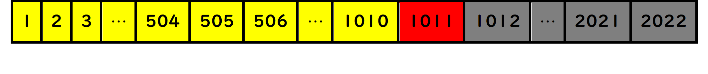
図7.1: 1011を選んだ様子
すると、図のように灰色の部分に答えが存在しないことが分かります。だから、黄色の部分だけを調べれば答えが出そうです。
次に1011の半分くらいの数字の505を質問してみます。相手が「それは正解より小さい」と答えました。
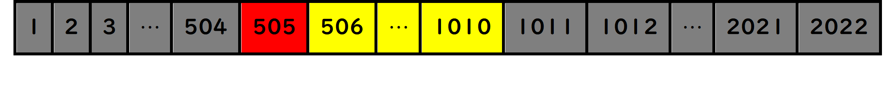
図7.2: 505を選んだ様子
するとやはり灰色の部分には答えは無いと分かります。だから残りは506～1010を調べれば良いのです。
これを何回も繰り返せば、いずれ黄色の答えのある範囲が小さくなり、最終的に一つに決まります。
このように、たくさんのなかから目標を選び出すときに、範囲を半分ずつに絞っていくのが二分探索です。こうすれば、2022回かかるかもしれなかった操作を、最大でも10回程度に抑えることができます！
ビットや二分探索の凄さはわかりましたか？これを使えば、様々な探索系の動作が簡単に出来ます。今からは、有名アルゴリズムやデータ構造への応用例を見ていきます。
ここからの話では、アルゴリズム等について語るため、いくつかそれを理解するための用語が必要です。その必要な単語を集めてここで説明します。
これは、本来は数学の世界のものですが、ここでは数学での意味とは少し異なります。ここでは、\( \log N \)という表記は\( N \)が2の何乗になっているかを表しています。つまり、\( \log 2 = 1 \)になりますし、\( \log 8 = 3 \)です。
これは、ざっくり説明すると、あるプログラムやアルゴリズムを実行するときにどれくらいの時間がかかるかを表します。といっても、この実行時間は、与えられるデータの量や数字の大きさにもよるので、一概に「○秒！」とは言えません。しかし、これはいくらデータ量やコンピュータの性能が変われど、データ量に対して比例するのか、二乗に比例するのか等はアルゴリズムごとに固有です。だから、一体アルゴリズムのスピードはどのくらいなのか比べるために次の物を使います。
これも数学で使われるものですが、ここではアルゴリズムのスピードがデータ量に対してどのくらいなのかを示します。例えば、データが\( N \)個与えられるとします。そして、あるアルゴリズムの計算時間がこのデータ量\( N \)の二乗に比例するとします。このとき、これは\( O(N^2) \)と表します。といっても、これは大まかな比較に用いるものなので、\( N \)に比べれば基本的に小さい定数はオーダー記法では省きます。(AtCoderの問題で与えられる\( N \)は200000程のこともある)
これは、たくさんの数や文字などのデータが一直線に並んでいるものだと考えるとよいです。例えば、配列\( A \)（配列の大きさは\( N \)）があるとき、一つ目の要素は\( A_1 \), 二つ目の要素は\( A_2 \), ... Nつ目の要素は\( A_N \) というふうに表されます。
まずは一つ目です。いきなりよくわからないものが登場しました。これは、二分探索やビットと似たような考え方を持つアルゴリズムの一つです。全く一緒では無いですが、説明を読めば似ている所に気が付くはずです。ちなみにこれはビットとは似て非なるものなので注意しましょう。
これは配列があるときに、「\( l \)個目から\( r \)個目までの全ての数の和を求める」「\( i \)番目の要素を知る、変更する」といったことができます。普通に考えると、\( l \)個目から\( r \)個目までの全ての和を求めるときは、答えに一つ一つ要素を足していかなければなりません。\( r-l \)が少ない内はいいですが、\( r-l= \)100000といった場合、一個一個足すのはとても時間がかかりますね？そこで役立つのがBITです。これは、工夫した配列を用意することで、\( l \)個目から\( r \)個目まで全ての和が\( O(\log N) \)で求まります！
「工夫した配列」と言いましたが、実際にどのような事をしているのか説明します。
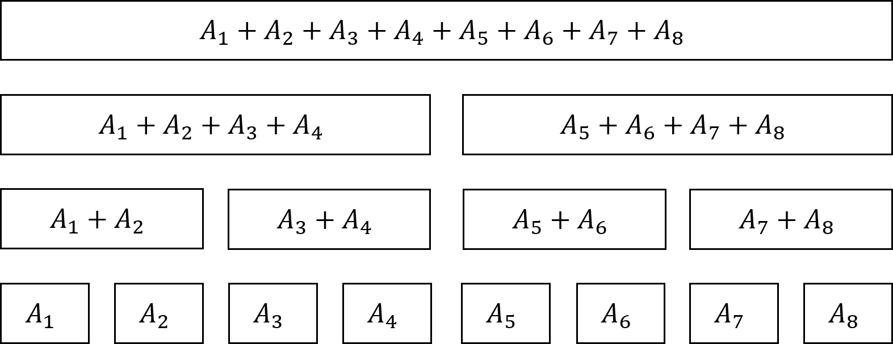
図7.3: 工夫した配列
図のように配列の各要素の和を記した配列があります。これを使って、上記の動作を実現したいです。しかし、実はもっと少ない要素数の配列でこれは実現できます。
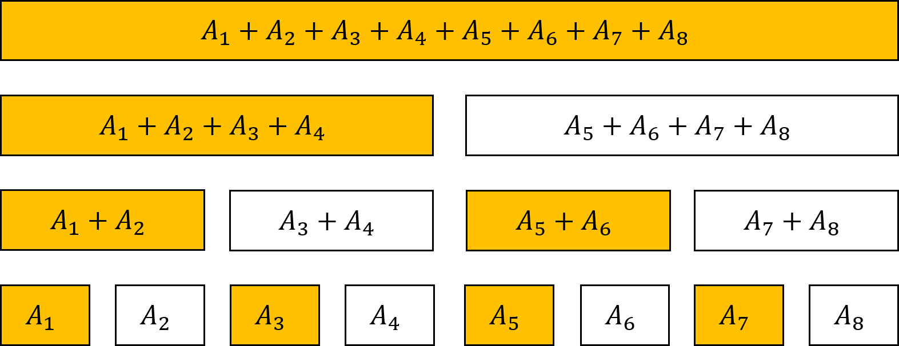
図7.4: 工夫した配列v2
実はこのオレンジの部分だけを配列として記録しておけばBITは実現できます。では、実際にこのオレンジの部分だけを利用したBITの動作を図で見てみましょう。
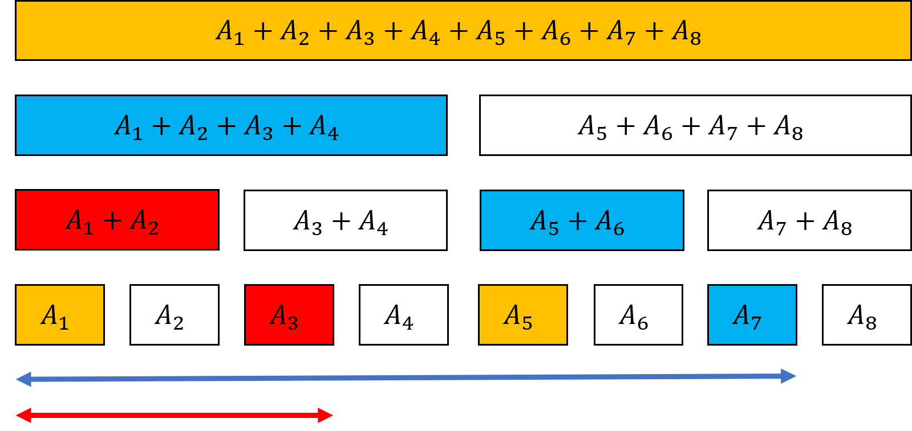
図7.5: 区間の和を求める様子
ここでは\( A_4 \)から\( A_7 \)までの和を考えます。まず、図のように、「\( A_1+A_2+A_3+A_4 \)」と「\( A_5+A_6 \)」と「\( A_7 \)」のブロックを使えば、\( A_1 \)から\( A_7 \)までの和を求めることができます。(図の青矢印の区間)次に、「\( A_1+A_2 \)」と「\( A_3 \)」のブロックを使えば、\( A_1 \)から\( A_3 \)までの和が求まります。(図の赤矢印の区間)青矢印の区間から赤矢印の区間を引けば、\( A_4 \)から\( A_7 \)までの和が求められます！
さて、これにかかる時間ですが、\( N \)が巨大になったときに、これは普通にやるよりもはるかに高速に動きます。具体的には、1から\( r \)までの区間の和を求めるときに、同じ個数の数が入ったブロックを複数回使うことは無いため、これは最大でも\( O(\log N) \)に抑えることが出来ます。これは\( N= \)1000000といった巨大な数でも、40回以内の操作で任意の区間の和を求める事ができます。でも実は、区間の和を求めるだけならもっと高速なアルゴリズムが存在します。累積和と呼ばれるもので、\( A_1, A_1+A_2, A_1+A_2+A_3, ... \)のような配列を持てば、\( O(1) \)で区間の和を求めることができます。しかし、BITのアイデンティティは値の変更が出来ることです。
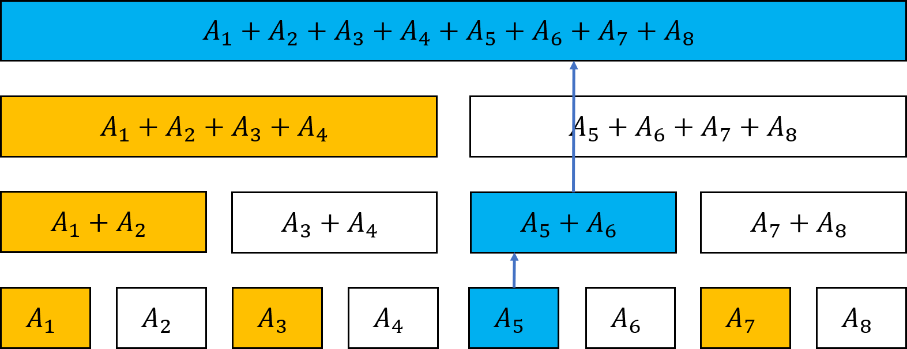
図7.6: 一点更新
図のように、\( A_5 \)一つを変更することを考えます。累積和の場合、\( A_5 \)が関与している要素は\( N-4 \)個あります。つまり、値の変更に\( O(N) \)かかってしまいます。すると、値に\( A_5 \)が関与しているのは図の青い部分だけです。そして、これはどの\( A_i \)に対しても、関与している要素は各段に最大一つなので、約log N個です。つまり、青い部分の変更だけで済むため、\( O(\log N) \)で値の変更ができます！
しかし、これは足し算、引き算のみで使えます。それではあまりに機能が少ないですね？そこで、BITよりも動作は少し増えますが、他の演算にも使えるようにしたのが次のものです。
通称「セグ木」です。BITのところの最後にも述べたように、これはBITみたいなことが他の演算(例外はあり)でも使えるようにしたものです。
やることはBITと似ていますが少し違います。ここでは、扱う演算を最大公約数とします。セグ木ではBITと違って下図の全ての範囲を使います。
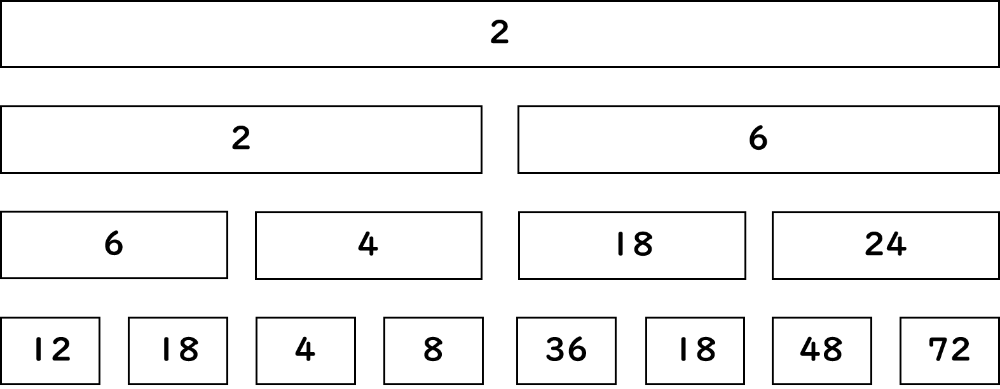
図7.7: BITのようにした配列
BITと同じように、一番下の段に普通の配列、下から二番目に\( A_1とA_2 \)、\( A_3とA_4 \)...の演算結果を示します。すると、最大公約数で配列{12,18,4,8,36,18,48,72}を例にとると、上図のようになります。
そして、BITでやったような区間の演算は次のようにして求めます。これはBITとは少し違うところです。
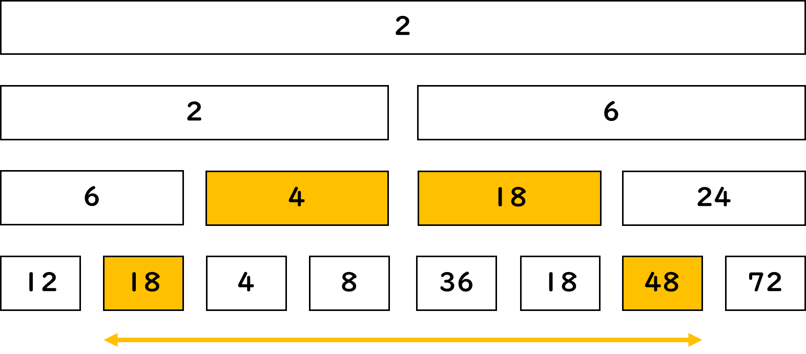
図7.8: 区間演算
BITでは、lからrまでの区間和を求めるときに、\( 1~l-1 \)番目までの和、\( 1~r \)番目までの和を出していましたが、今回は、\( 1~l-1 \)番目までの最大公約数、\( 1~r \)番目までの最大公約数を出したとしても、その二つを使ってl~r番目の最大公約数を求めることは出来ません。だから、直接\( l~r \)番目の最大公約数を求めるために、上図のようにします。よって、BITと違い配列部分の全てを使う必要があるわけです。
次に、値を一つだけ更新するときを考えます。
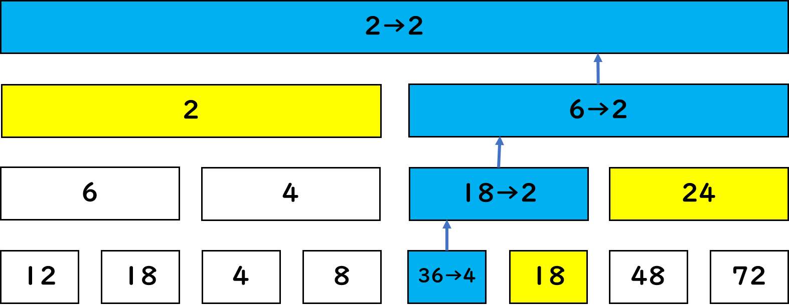
図7.9: 一点更新
これは、BITと同じように下を変更した後に、それが関与する要素を更新していきます。ここでBITと違うのは、和ではないため更新した隣の値(図の黄色部分)が必要になることがあるということです。
これらの計算量は、オーダー記法だとBITと同一ですが、定数倍の差でこちらが少し遅いです。
これは集合の操作が簡単にできるアルゴリズムです。さっき紹介したBITとは違います。これは、最初に述べたビットの概念を使ったアルゴリズムです。
例えば、4種類のグッズがあり、それぞれについて買うか買わないか決めることができるとします。このとき、買い方は\( 2^4 \)通りあります。人間ならば、「これとこれを買って、残りを買わない」といったふうに情報を管理できますが、コンピュータで実装するときは、愚直に再現しようとすると、4個買うか買わないかの値を管理しなければなりません。これは大変ですね？そこで活躍するのがbit全探索です。これを使えば、数一つで集合の再現、探索ができます！
といってももはやこれはアルゴリズムというより表現法ですね。
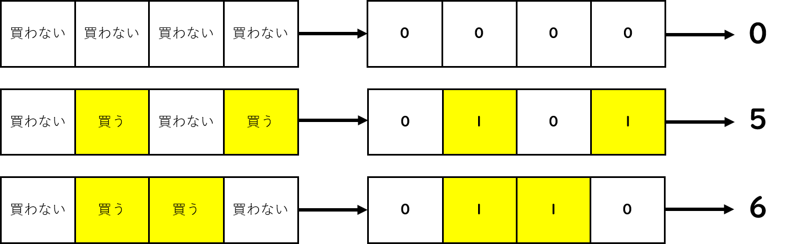
図7.10: 集合と数
先程のグッズの例で表します。「買わない」= 0、「買う」= 1として表すと、図のように4つとも買わない場合は、0000と表されます。同じように、2個目と4個目を買うときは0101、2個目と3個目を買うときは0110と表されます。この表記、ビットっぽいと思いませんか？
これをビットと見立てて数にすると、「0000」= 0、「0101」= 5、「0110」= 6となります。よって、集合を一つの数で表すことができます。逆に考えると、「0000」= 0から「1111」= 15まで全ての数を調べれば、全ての集合を調べたことになります。つまり、ビットによる表記を使えば、メンドクサイ集合の全探索も、一つの数を使うだけで簡潔に探索する事ができます。
これも集合に対する操作シリーズです。これはまず説明する前に具体例を見てください。
巡回セールスマン問題
\( N \)個の街があり、\( M \)個の街と街を結ぶ街道があります。 \( M \)個の街道を渡るには、それぞれ\( T_i(1 < i < M) \)の時間がかかります。 セールスマンは、一つ目の都市から出発し、\( N \)個全ての都市をまわろうと考えています。 このとき、セールスマンが全ての都市を回る最短時間はいくらでしょうか？
まずは普通に考えてみましょう。セールスマンは都市のまわる順番を自由に選ぶことが出来ます。なので、全ての順番の選び方について、最短となるルートを選べば答えが出そうです。このとき、このやり方の計算量は、順番を全探索するので\( O(N!) \)かかります。つまり\( 1 \times 2 \times 3 \times \cdots \times N \)ということです。しかし、このやり方はとても非効率です。一般的なコンピュータで一瞬(1秒くらい)で終わるのは大体\( 10^8 \)回程度の計算ですが、\( 12! = 479001600 \)なので、\( N=12 \)程度でも処理が遅くなってきます。そこで活躍するのがbitDPです。
これはこの問題のような動作を\( O(N!) \)から\( O(N^2 2^N) \)まで改善可能です。こうすると大体\( N=20 \)程度まで一瞬で動作が終わる範囲となります。「あんまり変わってない...」と思いますね？ あんまり変わってません。しかし、\( N \)がより増えるにつれて増加する計算量もこちらが抑えられます。
まず次の様な都市があったとします。
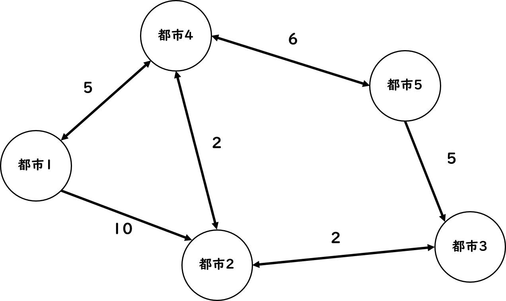
図7.11: 都市の例
例えば、セールスマンが[1→2→4→5→3]の順でまわるときと[1→4→2→5→3]の順でまわるときについて考えます。それぞれの道筋を矢印で示します。この場合は[1→4→2→5→3](青矢印)の方が速いですが、この矢印を見たときに、4～3の区域は二回探索しています。もう距離が分かり切っているのに二回探索するのは無駄な気がしますね？
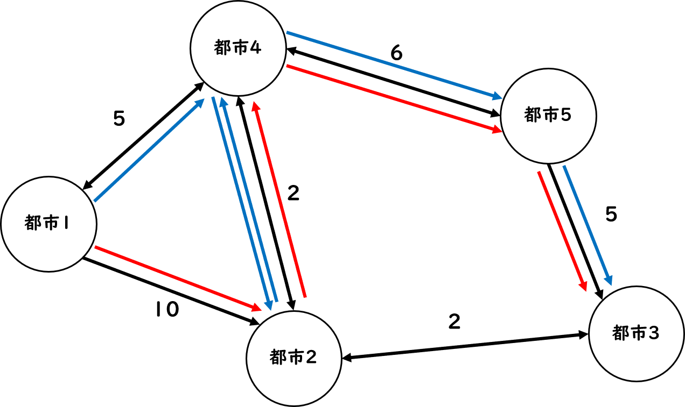
図7.12: 道筋
この場合は[1→4→2→5→3](青矢印)の方が速いですが、この矢印を見たときに、4～3の区域は二回探索しています。もう距離が分かり切っているのに二回探索するのは無駄な気がしますね？そして、この場合、4までめぐるのが速い方が最短となりますね？つまり、それぞれの都市への最短時間は、めぐってきた順番には影響せず、めぐってきた都市の集合と今どこの都市にいるかだけに依存します。
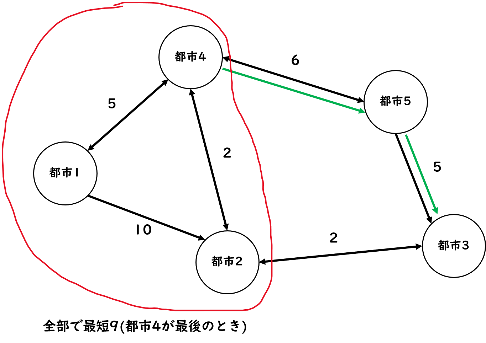
図7.13: bitDPの考え
なので、図のように1,2,4にはすでにめぐっており、都市4にいるときの最短が分かれば、残りの探索は一回で済みます。
このとき、集合を情報として持つのに便利なのがビットです。「どこにめぐったか」という情報を持つのにビットを使います。
あまりにもビットが関係する部分が少ないですが、名にbitを冠するので紹介しました。
これまで二分探索やビットという「2」という数字を扱う世界で説明していました。しかし、二分探索でも求められないようなものがあります。凸関数の極値などです。そもそも二分探索は配列が小さい順に並んでいることが前提ですが、凸関数は小さい順に並んでなどいません。そこで三分探索を使います。
これは関数の極値が定義域に高々一個しかないときに、その極値の値を求められるというものです。「微分すればいいじゃん？」と思うかもしれません。はい、その通りです...しかし、三分探索の利点は、時間はかかるものの極値が一つならどんなものでも極値が求まります。式がとんでもなくて微分がめんどくさくてもなんとかなるのです。
まずは適当なグラフを用意して三等分します。
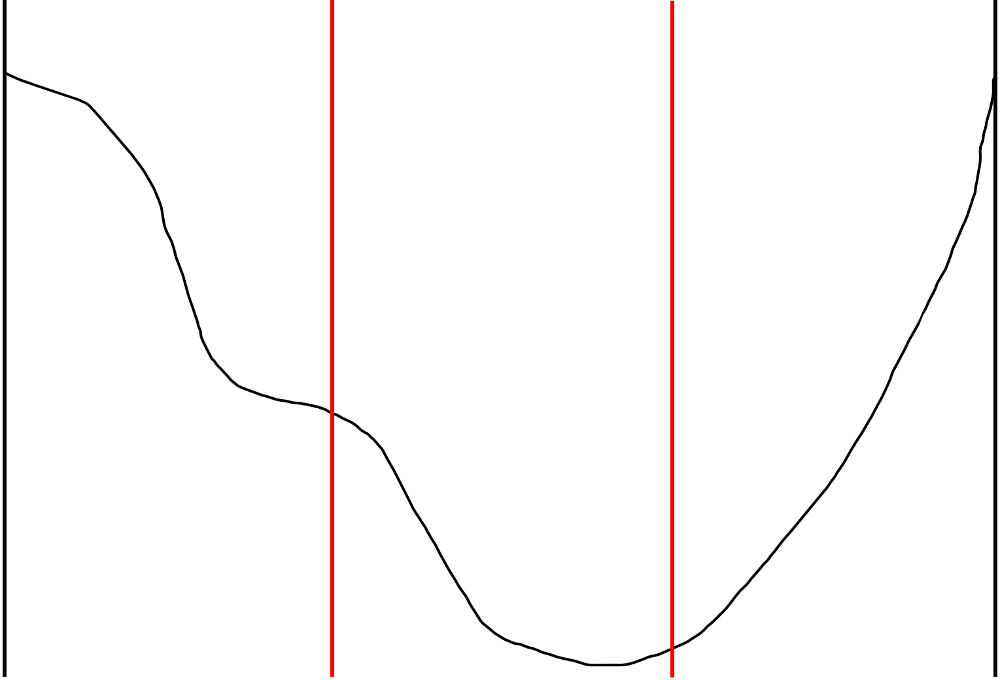
図7.14: 適当なグラフ
ここで、三等分している赤の線の位置の値がどちらが小さいかを比べると、右の方が小さいですね？逆に言えば、これは極値が高々一個なので、一番左側の区域には最小値は存在しない(右にもっと小さいのがあるから)ので、左側の区間を消し、また残った区間を三等分します。
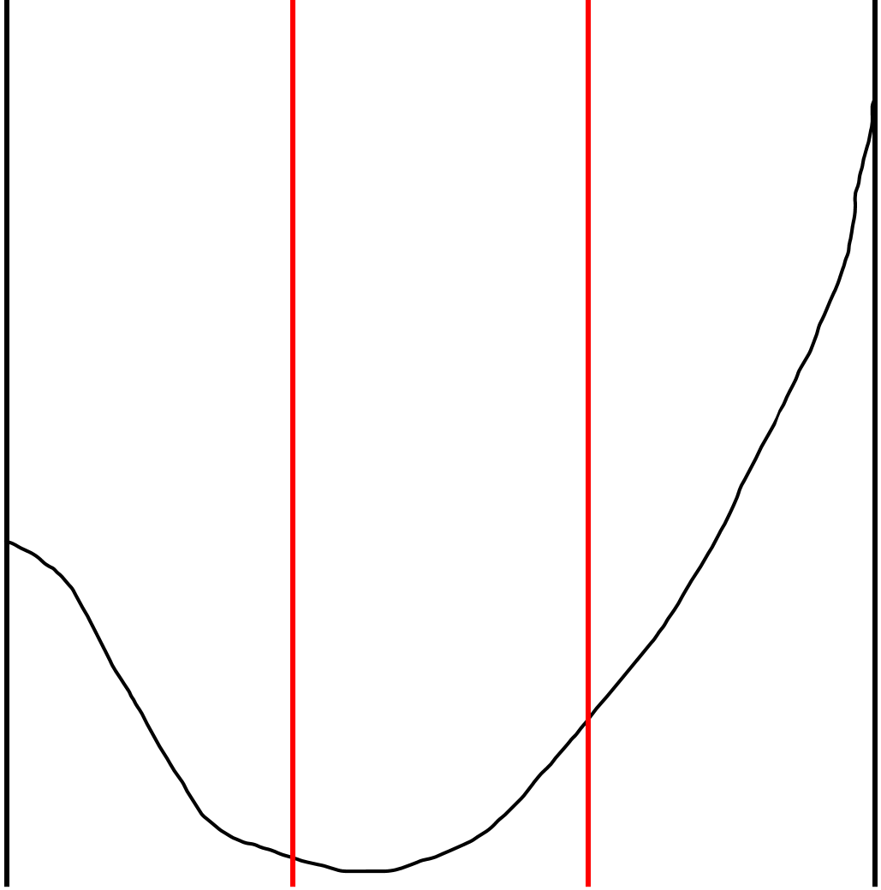
図7.15: 左を消す
これはさっきのグラフから左を消したものです。さらに三等分してあります。そして、この赤い棒のうち値が小さいのは左の方です。なので一番右の区間を消します。
このように、どんどん「最小値がない」と分かる区間を消していくと近似的に最小値を求めることが出来ます。
いかがでしたか？ビットや二分探索(?)アルゴリズム達は。しかし、これはほんの一部で、このジャンルだけでもまだまだたくさんのアルゴリズムが存在します。例えばC++のstd::set、ダブリング等様々です。これらはいずれも二分探索やビットとは言いづらくとも、「2」という数字が鍵を握るアルゴリズムです。皆さんも是非調べて見てください！今回はあまり量も書けませんでしたし、厳密な実装も載せられませんでしたが、またの機会ではそれもしたいと思っています。では締め切りがもうすぐなのでこれで。
http://hos.ac/slides/20140319_bit.pdf